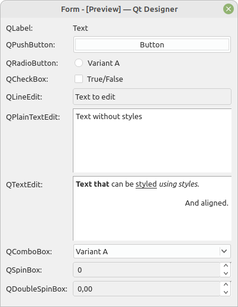
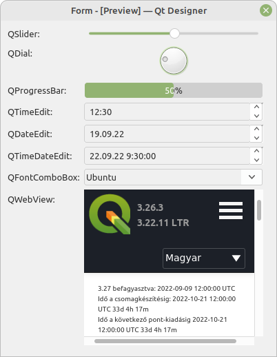
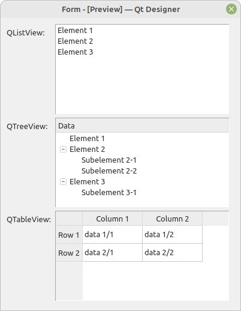
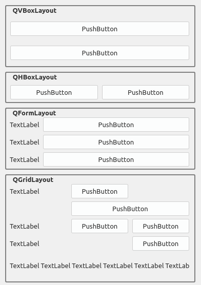

4 Prvky GUI
Knihovna Qt poskytuje řadu prvků uživatelského rozhraní. Pro přehled prvků lze použít Qt Designer, což je grafický nástroj pro tvorbu uživatelského rozhraní.
Mezi tyto prvky se řadí např: popisky (QLabel), tlačítka (QPushButton), přepínače (QRadioButton), zaškrtávací pole (QCheckBox), několik druhů prvků pro editaci text (např. QLineEdit, QPlainTextEdit či QTextEdit), rozbalovací seznam (QComboBox), spinnery pro celá a desetinná čísla (QSpinBox a QDoubleSpinBox) (viz Obr. 4.1), posuvníky (QSlider či QDial), ukazatel postupu (QProgressBar), prvky pro výběr času či data (QTimeEdit, (QDateEdit a (QDateTimeEdit). Mimo to existují ještě specializované varianty prvků, například QFontComboBox jako varianta QComboBox speciálně zaměřená na výběr fontů, či speciální prvky pro rendrování HTML stránek - QWebView (viz Obr. 4.2).


Prvky GUI lze poměrně jednoduše modifikovat, ať už vizuálně nebo jejich chování, vytvářením tříd, které odvozují z jichž existujících tříd. V takto odvozených třídách lze vytvářet nové funkce či modifikovat chování funkcí existujících. Tímto postupem lze poměrně snadno vytvářet více či méně modifikované prvky GUI, poskytující funkcionalitu, která je aktuálně potřebná.
Dále pak existují prvky pro zobrazení komplexnějších struktur jako jsou např. seznamy (QListWidget nebo QListView), tabulky (QTableView nebo QTableWidget) či stromové struktury (QTreeView nebo QTreeWidget) ale i jiné (viz Obr. 4.3).

Dále pak existují prvky, které umožňují různé strukturování GUI, respektive prvků v něm. Mezi ty patří např. QGroupBox, QGroupBox, QTabWidget, QStackedWidget a další.
Qgis definuje celou řadu vlastních GUI prvků, které se přímo zaměřují na práci s geodaty či funkcionalitu GIS. Všechny se nachází v modulu qgis.gui.
4.1 Rozložení prvků GUI
Prvky GUI v aplikaci neexistují samy o sobě, ale vždy uspořádané do nějaké struktury. Základem této struktury je třída QLayout, která specifikuje základní chování rozvržení (layoutu) (The Qt Company Ltd. 2022a). Základní rozvržení, existující přímo jako Qt třídy jsou QHBoxLayout a QVBoxLayout, které skládají prvky do horizontální potažmo vertikální struktury, QFormLayout, používá dva sloupce - popisku a samotné prvky, a QGridLayout, což je nejkomplexnější layout, kde je možné specifikovat počet sloupců, řádků a následně přiřazovat prvky GUI do jedné či několik takto vzniklých buněk.

V rámci jednoho QWidget, či jiného GUI prvku může existovat několik layoutů, které do sebe mohou být i různě zanořené. Tím vznikají komplexní prvky GUI.
4.2 QMainWindow - hlavní okno aplikace
QMainWindow z modulu PyQt5.QtWidgets je třída, která poskytuje základní rozhraní aplikace. V tomto rozhraní jsou předchystané položky pro všechny v aplikacích obvyklé prvky (viz Obr. 4.5) např. menu (Menu bar), lišty s nástroji (Toolbars), uživatelsky umisťované widgety (Dock Widgets), též zvané dokovatelné widgety, stavový řádek (Status bar) a hlavní prostor aplikace (Central Widget).

4.3 Samostatná okna
Aplikace mohou vytvářet další doplňková okna, která napomáhají uživateli interagovat s programem. Jedná se obvykle o prvky odvozené od třídy QDialog, byť je možné i použití jiné třídy, či přímo QWidget. Tato třída poskytuje základní funkcionalitu pro tvorbu doplňkových oken. Doplňková okna lze rozdělit na dva typy: okna, která blokují hlavní aplikaci a musí být ukončena, pro návrat do hlavní okna (v terminologii Qt{.software} modeless dialogs), a okna, která existují samostatně a mohou být otevřena současně s dalšími okny (v terminologii Qt{.software} modal dialogs). Rozdíl mezi těmito okny je v tom, jakou funkcí se spouští, zatímco okna typu modeless se spouští funkcí exec(), která převezme hlavní běhovou smyčku programu a je nutné toto okno zavřít, aby byla předána zpět rodičovskému oknu, okna typue modal se pouze zobrazují funkcí show(), což umožní jejich souběh s dalšími okny.
V QGIS najdeme řadu příkladů obou typů těchto oken. Např. Atributová tabulka či Rozvžení (Layout) jsou příklady oken typu modal, které mohu existovat spolu s dalšími okny a neblokuje funkcionalitu dalších oken. Příkladem modeless okna je třeba Nastavení, což je okno, které zablokuje, až do svého uzavření, veškerou jinou funkcionalitu QGIS.
Okna typu Modal při svém uzavření vrací hodnotu. Tyto okna často disponují tlačítky, které umožňují zavření okna přijetím, či odmítnutím nějaké akce. Typicky například okna informující o přepsaní souboru při jeho uložení, kde má uživatel možnost potvrdit, nebo odmítnou přepsání souboru. Dle návratové hodnoty okna se pak dále větví příslušný hlavní program. Tento případ je demonstrován v ukázce: empty_application_with_settings_dialog.py, jenž je podrobněji popsán v Kap. 9.